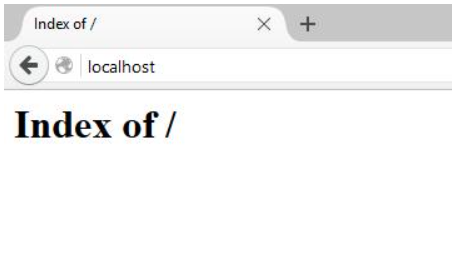
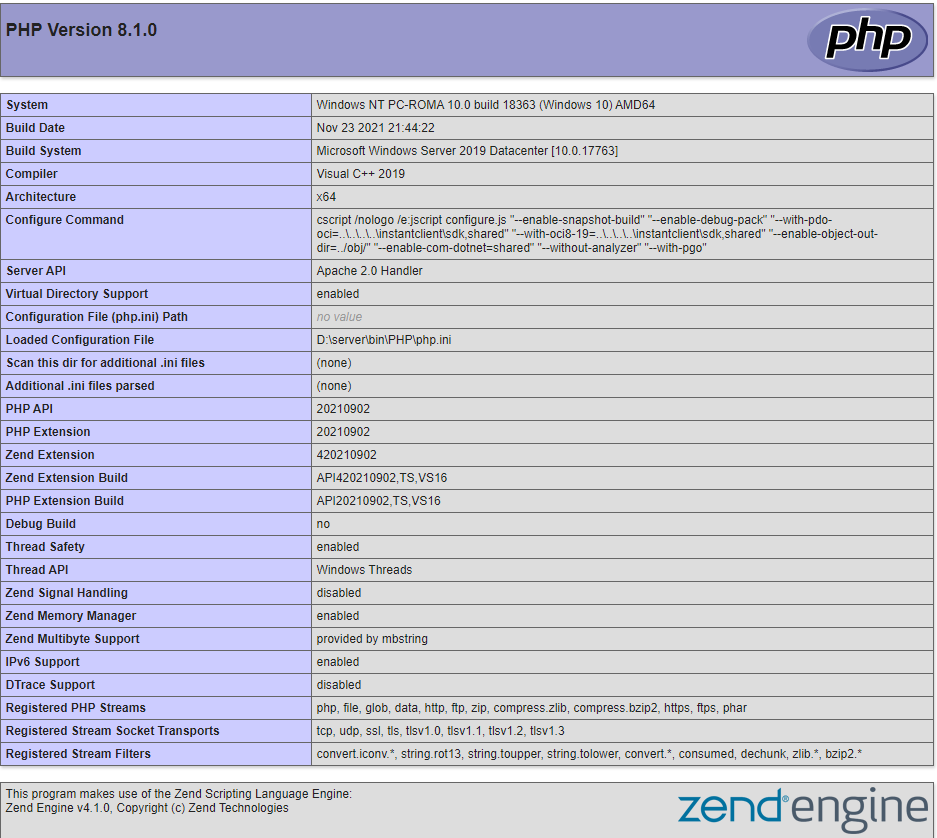

Вміст завантаженого архіву (точніше кажучи, лише каталог Apache24), розпакуйте в C:\Server\bin\. Перейдіть до каталогу c:\Server\bin\Apache24\conf\ і відкрийте файл httpd.conf будь-яким текстовим редактором. У ньому нам потрібно розкоментувати деякі рядки і змінити шлях до певних каталогів.
Відкрийте командний рядок (це можна зробити одночасно натиснувши клавіші Win+X). Виберіть Windows PowerShell (адміністратор) і скопіюйте туди:
c:\Server\bin\Apache24\bin\httpd.exe -k install
c:\Server\bin\Apache24\bin\httpd.exe -k start
І якщо все пройшло вдало, то ми отримаємо відповідь:
У папці c:\Server\bin\ створюємо каталог PHP і копіюємо вміст архіву php-8.0.0RC6-Win32-VC14-x64.zip. У файлі c:\Server\bin\Apache24\conf\httpd.conf в самий кінець додаємо рядки
PHPIniDir "C:/Server/bin/PHP"
AddHandler application/x-httpd-php .php
LoadModule php_module "C:/Server/bin/php/php8apache2_4.dll"
І перезапускаємо Apache
У каталозі c:\Server\data\htdocs\ створюємо файл з назвою i.php. Копіюємо в цей файл:
У браузері відкрийте посилання http://localhost/i.php. Якщо ви бачите те саме, що на картинці, значить PHP працює:
